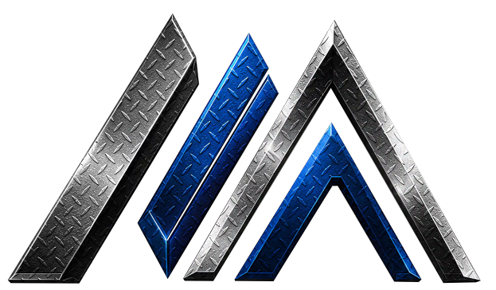

اطلاعات لازم برای استعلام
- نام محصول، گرید و استاندارد
- ابعاد، مقدار و تلرانس مورد نیاز
- کشور و محل تحویل
- نیاز به گواهی، بازرسی یا آزمون
- روش بستهبندی و بازه زمانی تحویل

فولاد مهاجر مبینتأمین، بازرگانی و صادرات محصولات فولادی
فولاد مهاجر مبین تأمین و صادرات شمش فولادی 3SP، 4SP و 5SP را برای کارخانههای نورد و خریداران عمده انجام میدهد. ابعاد، گرید، آنالیز و شرایط تحویل پیش از صدور پیشفاکتور با درخواست خریدار تطبیق داده میشود.

مشخصات زیر دامنه عمومی تأمین را نشان میدهد. مشخصات قطعی، استاندارد، آنالیز، مقدار قابل عرضه و برنامه تحویل باید در پیشفاکتور همان سفارش تأیید شود.
| موضوع | مشخصات عمومی |
|---|---|
| گرید و کیفیت | ST 3SP، ST 4SP و ST 5SP |
| ابعاد و شکل تحویل | مقاطع 100×100 تا 150×150 میلیمتر؛ طول 6، 12 متر یا سفارشی |
| کاربردهای متداول | خوراک خطوط نورد میلگرد، مفتول، مقاطع ساختمانی و قطعهسازی |
| بازرسی و اسناد | بر اساس توافق تجاری، استاندارد محصول و الزامات کشور مقصد |
| حمل و تحویل | قابل بررسی برای تحویل داخلی یا صادراتی بر مبنای مقصد و مقدار سفارش |
Mohajer Mobin Steel supplies Iranian steel billets for rolling mills and international buyers. Available grades, dimensions, inspection requirements, packing and delivery terms are confirmed for each commercial inquiry.
Please provide grade, standard, dimensions, quantity, destination, inspection requirements and preferred delivery terms. Availability and commercial terms are confirmed only in the relevant quotation.
خرید شمش فولادی · صادرات شمش 5SP · قیمت شمش فولادی صادراتی · Iran steel billet exporter
Mohajer Mobin Steel is a steel trading and export business serving qualified domestic and international inquiries.
گرید، ابعاد، مقدار، استاندارد، محل تحویل و نیاز بازرسی را اعلام کنید تا امکان تأمین و پیشنهاد تجاری بررسی شود.
بله؛ امکان صادرات پس از تأیید موجودی، مشخصات فنی، مقصد، روش حمل و الزامات اسنادی بررسی میشود.
قیمت ثابت نیست و به مشخصات فنی، مقدار سفارش، کارخانه، بازار، محل تحویل، هزینه حمل و شرایط پرداخت وابسته است. برای قیمت معتبر باید استعلام ارسال شود.
برای بررسی سایر محصولات بازرگانی و صادراتی، صفحه تخصصی محصول را انتخاب کنید.
برای دریافت پیشنهاد تجاری، مشخصات فنی، مقدار سفارش و مقصد را از طریق اطلاعات تماس رسمی سایت ارسال کنید. قیمت و موجودی فقط پس از بررسی درخواست تأیید میشود.
ارسال درخواست به واحد بازرگانی